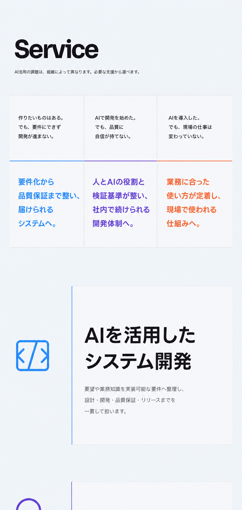
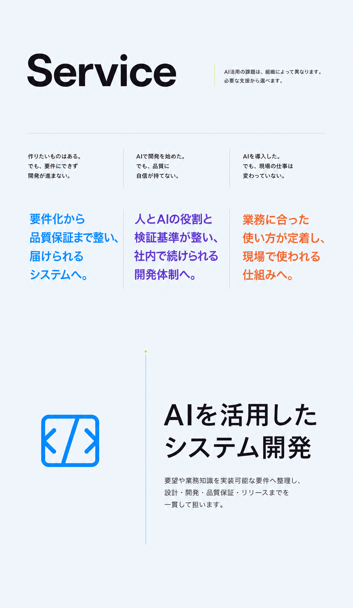
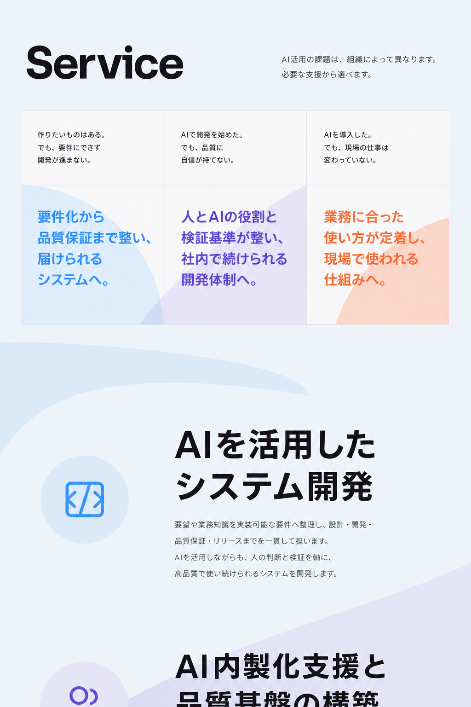
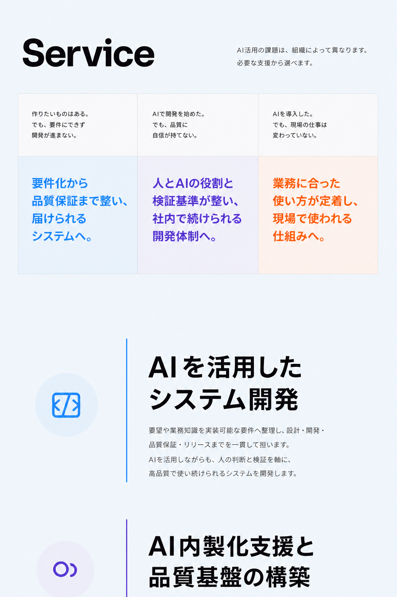

A / Editorial grid
線、余白、文字組の精度で情報の強弱をつくる静かな方向。

B / Open typography
面を減らし、タイポグラフィと独立したアイコンの位置関係で流れをつくる方向。

C / Brand color fields
低濃度の大判色面と切り取りで、縦スクロールに編集リズムをつくる方向。

C2 / Quiet color fields
Cの構造を保ち、背景の抽象図形を外して、色を情報面と境界だけに限定した方向。